Home |
OMLAB History |
Personnel |
Software and OMS Models |
Teaching Materials |
The "Editorial Page" |
Contact Us
Louis F. Dell'Osso, PhD When I'm not thinking about Ocular Motility
Bird Dogs (Brittany)


Copper (10 weeks) / Copper (9 years)


Copper and Lakota (7 weeks) / Lakota

Lakota (10 weeks) and Copper


Lakota: "Gee, these things are BIG!" / Copper: "Get away from my Goose"


"Did you REALLY fetch this?" / "I think it moved!"


"Congratulations big brother" / "I bet I could fetch it too"
Top of page
Hunting Field & Water Trials
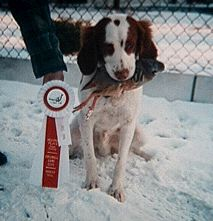 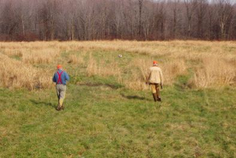
Copper: First Hunting Field Trial (7 months) / Hunting Field Trial (2003)
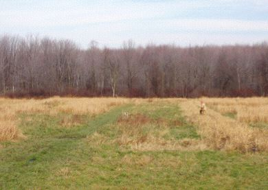 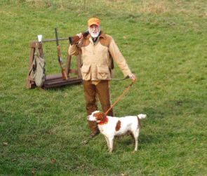
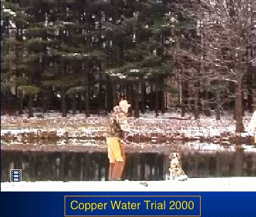 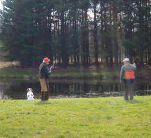 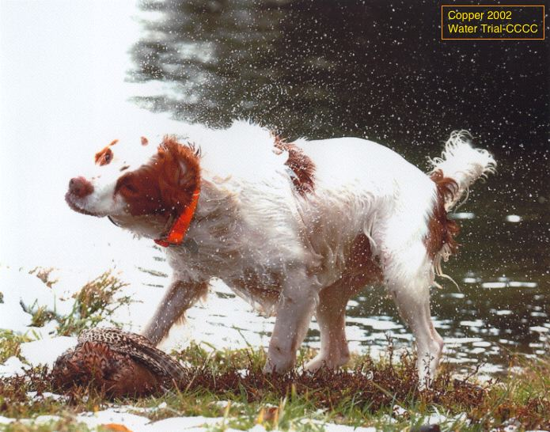
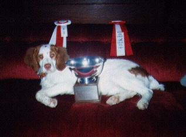 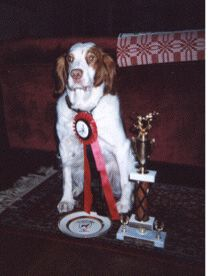
Copper: Hunting Field Winners' Trial (9 months) / Hunting Field Trial "Dog of the Day" (2000 & 2002)
Top of page
Upland Bird & Waterfowl Hunting
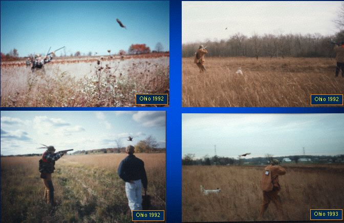
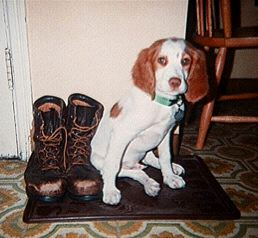 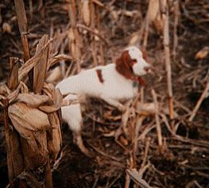 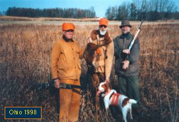
Ready to go Hunting (Copper thinks) / First Hunting Point (7 months)
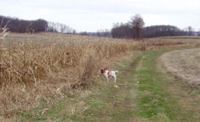 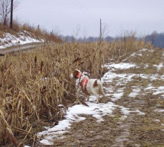
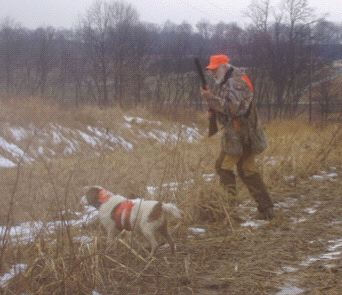 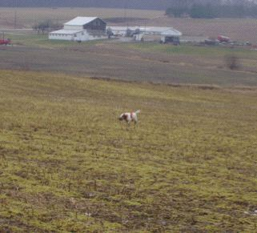
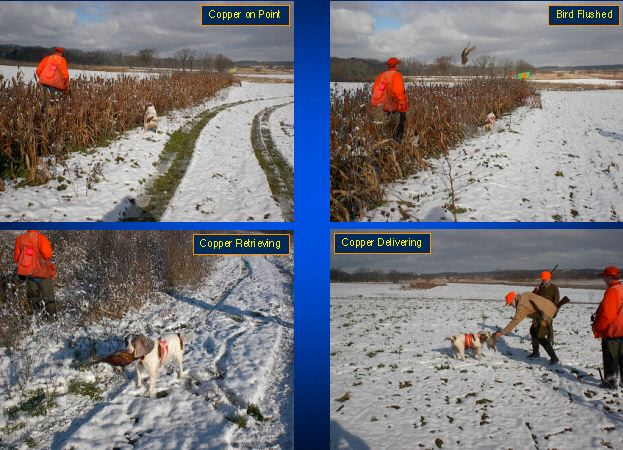
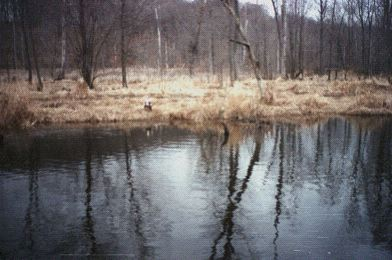 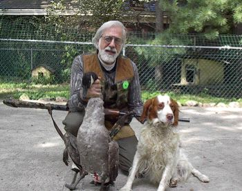
Copper Water Retrieve (Pheasant) / Copper's First Goose
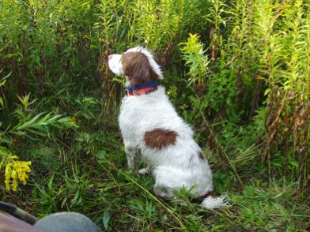 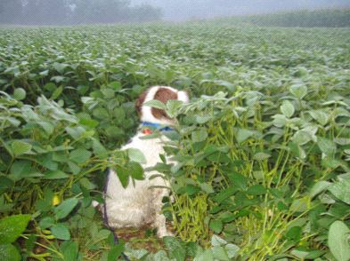
Copper in the Weeds and Bean Fields Scanning the Sky for Geese (2004)
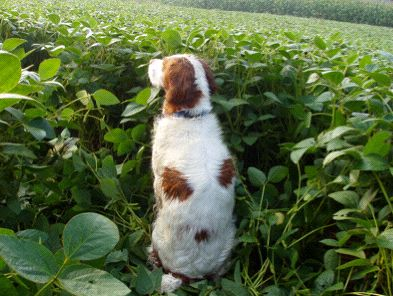 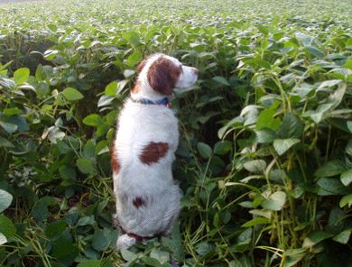
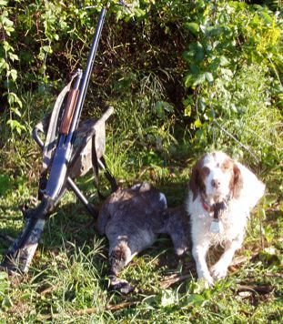 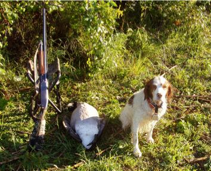
Copper gets two Geese (2004)
Top of page
Bow Hunting (Deer)


The 50-yard Shot (20' elevated tree stand) / The Result (1998) / 4-point Buck (2003)
Model Trains


Top of page
Other Pleasures


Top of page
Home |
OMLAB History |
Personnel |
Software and OMS Models |
Teaching Materials |
The "Editorial Page" |
Contact Us